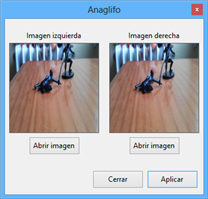

Situado en la octava posición de la barra superior de herramientas. A continuación se muestra una imagen del menú.

Ilustración 1. Menú operaciones con dos imágenes.

Este menú engloba operaciones aritméticas, lógicas, creación de anaglifos y comparación de imágenes. Las imágenes utilizadas durante esta sección del manual de ayuda, son las dos siguientes.

Ilustración 2. Imagen original 1.


Ilustración 3. Imagen original 2.

En este menú se encuentran las operaciones aritméticas básicas con dos imágenes. Como se puede observar en la siguiente imagen, se puede unir, sumar, restar, multiplicar y dividir dos imágenes. Además hay un checkbox para que las operaciones no afecten al canal alfa.

Ilustración 4. Menú operaciones aritméticas con dos imágenes.

Un paso previo a la hora de ejecutar la operación es cuadrar las imágenes, es decir, buscar entre las dos imágenes el ancho y alto mínimo, y la imagen de salida tendrá esos valores. Por ejemplo, si tenemos una imagen de 100x75 y otra de 75x100, la imagen resultante tras una operación aritmética será de 75x75.
La operación Unión busca los píxeles con las mismas coordenadas, suma sus 3 canales RGB y los divide entre dos, es decir, el valor de la imagen de salida será la media (para cada canal) de los valores de los píxeles de las imágenes de entrada. Si aplicamos una unión a las dos imágenes de prueba el resultado sería el siguiente.

Ilustración 5. Unión de imágenes.

Como puede observarse, las zonas comunes (intersección de rojo y negro) tienen un color resultado de sumar negro (0,0,0) y rojo (255,0,0) y dividirlo entre dos (128,0,0). Las zonas que son blancas en ambas imágenes seguirán siendo blancas, y las zonas negras que interseccionan con blanco pasarán a tener valor gris intermedio (128,128,128), y por último, las zonas rojas con intersección blanca tendrán un valor de 255 en el canal rojo y 128 en los canales restantes.
La operación suma busca los píxeles con las mismas coordenadas y suma sus 3 canales RGB de los valores de los píxeles de las imágenes de entrada. En caso de que algún valor sobrepase los 255, automáticamente pasa a tener valor 255. Si aplicamos la suma a las dos imágenes de prueba el resultado sería el siguiente.

Ilustración 6. Suma de imágenes.

Como puede observarse en la imagen, todo ha pasado a tener color blanco (255,255,255), excepto la zona común de negro y rojo. Esto es debido a lo siguiente; al juntar las imágenes si en cualquiera de las dos es valor del píxel es blanco, automáticamente el píxel de salida pasará a ser blanco. Únicamente donde se junta el cuadrado negro y rojo, el píxel de salida pasa a ser rojo, ya que si se suma negro (0,0,0) más rojo (255,0,0), el resultado será rojo.
La operación resta busca los píxeles con las mismas coordenadas y resta sus 3 canales RGB de los valores de los píxeles de las imágenes de entrada. En caso de que algún valor sea inferior a 0, automáticamente pasa a tener valor 0. Si aplicamos la resta de la imagen 1 (imagen con cuadrado negro) menos la imagen 2 (imagen con cuadrado rojo) el resultado es el siguiente.

Ilustración 7. Resta de imágenes.

En la ilustración anterior se puede ver lo sucedido. La parte negra ha sido creada o bien, restando blanco (255,255,255) menos blanco (255,255,255), o negro (0,0,0) menos blanco (255,255,255) o negro (0,0,0) menos rojo (255,0,0). El color azulado se ha creado en las zonas donde no hay intersección en el cuadrado rojo con el negro, debido a que se ha restado el valor blanco (255,255,255) menos el rojo (255,0,0) siendo su resultado un color sin rojo y con los canales verde y azul al máximo (0,255,255).
La operación división busca los píxeles con las mismas coordenadas y divide sus 3 canales RGB de los valores de los píxeles de las imágenes de entrada. En caso de que algún valor del denominador sea 0, automáticamente pasa a tener valor 1. Si aplicamos la división de la imagen 1 (imagen con cuadrado negro) menos la imagen 2 (imagen con cuadrado rojo) el resultado es el siguiente.

Ilustración 8. División de imágenes.
Aparentemente el resultado es igual que en la resta, pero nada más lejos de la realidad. Si analizamos los píxeles, no toda la parte negra realmente es negro puro. Esto es debido a que cuando vamos a dividir blanco (255,255,255) entre blanco (255,255,255) el resultado es todos unos (1,1,1). En caso de dividir negro (0,0,0) entre blanco (255,255,255), el resultado será negro puro (0,0,0). En la parte que interseccionan los cuadrados rojo y negro la división será negro puro, ya que se divide entre 0. Por último, en la zona blanca (255,255,255) con intersección roja (255,0,0), se debe pasar los ceros del denominador a unos, y por lo tanto el color mostrado será 1 para el canal rojo y 255 para los canales verde y azul.
La operación multiplicación busca los píxeles con las mismas coordenadas y multiplica sus 3 canales RGB de los valores de los píxeles de las imágenes de entrada. En caso de que algún valor sobrepase los 255, automáticamente pasa a tener valor 255. Si aplicamos la multiplicación a las dos imágenes de prueba el resultado sería el siguiente.

Ilustración 9. Multiplicación de imágenes.

El único detalle a tener en cuenta en esta operación es que, como puede observarse, el cuadrado negro solapa al rojo debido a que al multiplicar negro (0,0,0) por rojo (255,0,0) obviamente el resultado será negro.
En este menú se encuentran las operaciones lógicas básicas con dos imágenes. Como se puede observar en la siguiente imagen, se puede aplicar el operador AND, OR y XOR a dos imágenes. Además hay un checkbox para que las operaciones no afecten al canal alfa.
No obstante hay que tener en cuenta que este tipo de operaciones tiene más sentido aplicadas sobre imágenes binarias.

Ilustración 10. Menú operaciones lógicas con dos imágenes.

Un paso previo a la hora de ejecutar la operación es cuadrar las imágenes, es decir, buscar entre las dos imágenes el ancho y alto mínimo, y la imagen de salida tendrá esos valores. Por ejemplo, si tenemos una imagen de 100x75 y otra de 75x100, la imagen resultante tras una operación aritmética será de 75x75.
El operador AND busca los píxeles con las mismas coordenadas, y para cada canal RGB aplica el operador lógico AND. A continuación se muestra el operador AND aplicado a la imagen con el cuadrado negro y el cuadrado rojo.

Ilustración 12. AND de imágenes.

El resultado de la imagen anterior es fruto del operador AND, y de esta manera se unen las imágenes, por lo tanto, las zonas blancas y negras permanecerán del mismo color, y las zonas rojas con intersección negra pasarán a ser negras.
El operador OR busca los píxeles con las mismas coordenadas, y para cada canal RGB aplica el operador lógico OR. A continuación se muestra el operador OR aplicado a la imagen con el cuadrado negro y el cuadrado rojo.

Ilustración 13. OR de imágenes.

Al aplicar este operador a las imágenes, el resultado es todo el interior blanco y la zona de intersección de cuadrados pasa a tener color rojo.
El operador XOR busca los píxeles con las mismas coordenadas, y para cada canal RGB aplica el operador lógico XOR. A continuación se muestra el operador XOR aplicado a la imagen con el cuadrado negro y el cuadrado rojo.

Ilustración 14. XOR de imágenes.

Este operador aplicado a dos imágenes invierte todos los colores de la imagen excepto las zonas de intersección que pasan a tener color rojo.
Los anaglifos son, imágenes de dos dimensiones capaces de provocar un efecto tridimensional, cuando se ven con lentes especiales (lentes de color diferente para cada ojo).
Para poder ver estas imágenes en 3D, serían necesarias unas gafas anafligo.
La imagen se forma a partir de dos imágenes muy próximas. Los pasos son los siguientes:
El menú disponible para efectuar permite seleccionar la imagen de la izquierda y la de la derecha (que deben tener un solape amplio).

Ilustración 15. Menú anaglifo.


Una vez aplicado el efecto sobre una imagen, el resultado será una imagen anaglifo.

Ilustración 16. Anaglifo a partir de dos imágenes.

Como se observa en la anterior ilustración, aparentemente la imagen es normal excepto la zona que se verá en 3D. Esta zona tiene un borde izquierdo de color rojo y un borde derecho de color verde más azul. Visualizando esta imagen con gafas anafligo se puede observar un efecto tridimensional.
Este menú permite hace comparaciones de imágenes para determinar el grado de similitud entre ellas. Las comparaciones se pueden hacer analizando píxeles únicos en comparación con sus homólogos de la otra imagen, o comparando en función de sus vecinos.
Previamente a comparar las imágenes se deben cuadrar para que tengan el mismo tamaño, esto lo hace automáticamente Apolo. Este proceso trata de buscar entre las dos imágenes el ancho y alto mínimo, y la imagen de salida tendrá esos valores. Por ejemplo, si tenemos una imagen de 100x75 y otra de 75x100, la imagen resultante tras una operación aritmética será de 75x75.
En la opción comparador imágenes local, se analizan dos imágenes.

Ilustración 17. Menú comparar imágenes local.

En este caso de prueba se analizará la imagen de Lena original y pasada a escala de grises. Una vez cuadradas las imágenes, se van recorriendo ambas calculando la diferencia (píxel a píxel) entre Lena original y Lena escala de grises. Ejemplificándolo, si por ejemplo el píxel 20,20 de la imagen original tiene un valor (en el canal rojo) de 20, y la imagen en escala de grises un valor de 22, la diferencia es de 2. Cuando la diferencia es 0, el valor es el mismo y se considera un acierto, en cambio, cuando la diferencia es 255 el porcentaje de error en ese píxel es de 100%. Todo este proceso se realiza para los tres canales RGB y además para la escala de grises.
Además, se muestra un histograma aproximado del número de aciertos. Analizando el histograma, en la parte de la izquierda (cercano al 0) están los valores con menos porcentaje de error y en la parte de la derecha (255) los valores con mayor porcentaje de error.
Para el caso analizado, el porcentaje total de acierto es del 94% y queda claro que la función trabaja de forma correcta, puesto que el porcentaje de aciertos en escala de grises es 100%. Esto último quiere decir que al pasar la imagen original a escala de grises y comparándola con la segunda imagen (que está en escala de grises) indica que todos los píxeles son iguales.
En la opción comparador imágenes vecinos, se analizan dos imágenes.

Ilustración 18. Menú comparar imágenes vecinos.

En este caso de prueba se analizará la imagen de Lena original e invertida. El proceso que realiza el comparador es analizar las diferencias entre el píxel evaluado y sus vecinos, y el mismo proceso para la segunda imagen. Una vez calculadas estas diferencias, se calcula la diferencia total entre las dos imágenes y se va acumulando el resultado. En el siguiente ejemplo se puede ver dos píxeles y sus respectivos 8 vecinos. Únicamente vamos a analizar el color rojo.
Píxel de la primera imagen:

Tabla 1. Píxel central y sus vecinos.
81 |
81 |
80 |
79 |
80 |
80 |
81 |
80 |
79 |

Píxel de la segunda imagen:

Tabla 2. Píxel central y sus vecinos.
80 |
81 |
80 |
79 |
81 |
79 |
81 |
82 |
79 |

Se calcula el valor absoluto de las diferencias entre el píxel central y sus vecinos.

Tabla 3. Diferencias para el primer píxel.
Abs(80-81) |
Abs(80-81) |
Abs(80-80) |
Abs(80-79) |
Abs(80-80) |
Abs(80-80) |
Abs(80-81) |
Abs(80-80) |
Abs(80-79) |


Tabla 4. Diferencias para el segundo píxel.
Abs(81-80) |
Abs(81-81) |
Abs(81-80) |
Abs(81-79) |
Abs(81-81) |
Abs(81-79) |
Abs(81-81) |
Abs(81-82) |
Abs(81-79) |

Tras calcular las diferencias, se procede a calcular la diferencia en valor absoluto entre los valores obtenidos. El resultado se va acumulando.

Tabla 5. Diferencias entre los píxeles.
Abs(80-81) - Abs(81-80) |
Abs(80-81) - Abs(81-81) |
Abs(80-80) - Abs(81-80) |
Abs(80-79) - Abs(81-79) |
Abs(80-80) - Abs(81-81) |
Abs(80-80) - Abs(81-79) |
Abs(80-81) - Abs(81-81) |
Abs(80-80) - Abs(81-82) |
Abs(80-79) - Abs(81-79) |

Se opera y se acumula el resultado.
ResultadoAcumulado= (Abs(1-1)) + (Abs(1-0)) + (Abs(0-1)) + (Abs(1-2)) + (Abs(0-0)) + (Abs(0-2)) + (Abs(1-0)) + (Abs(0-1)) + (Abs(1-2))
ResultadoAcumulado=8
Por lo tanto, en el ejemplo, el porcentaje de acierto para el píxel evaluado es de 8 (nótese que si el valor es 0 el porcentaje de acierto es del 100%, y si es 255 el porcentaje de acierto es del 0%).
Dentro de la función comparador de imágenes vecinos, se pueden seleccionar varios parámetros para obtener o ajustar el resultado. Uno de ellos es el número de vecinos evaluados (en el ejemplo anterior son 3).
Previo al comparador de imágenes, se puede activar la opción Aplicar filtro de paso alto, y antes de evaluar las imágenes se aplica una máscara de filtro de paso alto que aumenta los detalles de la imagen (más información sobre este tipo de filtros en Manual de usuario>Referencia de funciones>Mascaras>Filtro paso alto).
Si se activa la opción comparador rápido, se reducen las imágenes a 50x50 y se comparan con ese tamaño. No obstante, al reducir las imágenes se pierde información de la misma, por lo tanto los resultados pueden ser imprevisibles.
Por último, se permite aplicar a los resultados una función (sin modificar, e^x, x*sqrt(2)). El aplicar una función lo que hará es exagerar los resultados. Si por ejemplo se selecciona e^x, como la curva de esta función en los primeros valores no es muy alta, los valores cercanos al cero (valores con porcentaje de acierto muy alto) apenas se verán afectados, en cambio, a medida que se aleja del 0 los valores se disparan y de esta manera se puede exagerar el número de errores.
Como puede observarse en la anterior ilustración, el porcentaje de aciertos es del 100%. Esto se debe a que las imágenes que se están comparando son la misma a excepción de que a la segunda se le han invertido los colores, pero esto no altera a las diferencias entre sus vecinos que seguirán siendo las mismas.
Created with the Personal Edition of HelpNDoc: Free Web Help generator